start-offline.command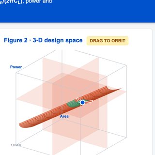
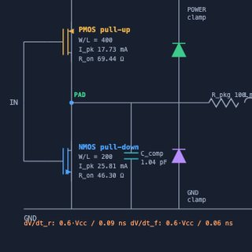
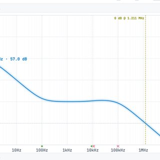
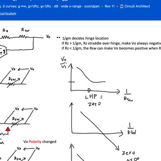
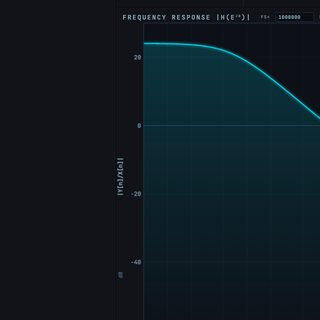
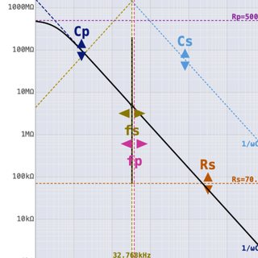
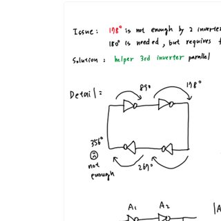
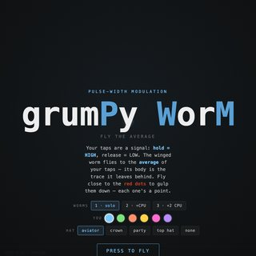
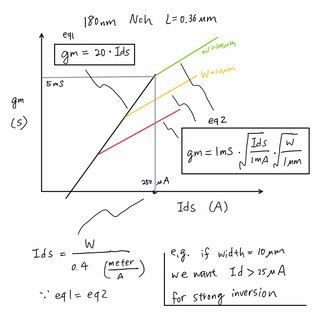
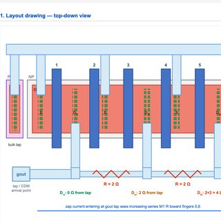
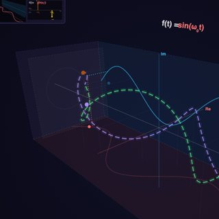
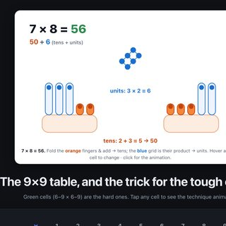
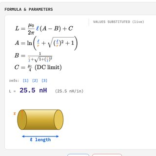
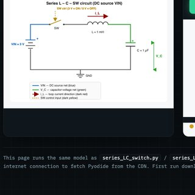
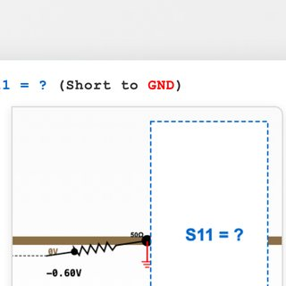
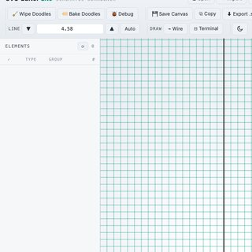
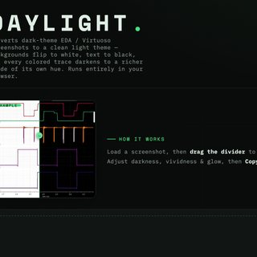
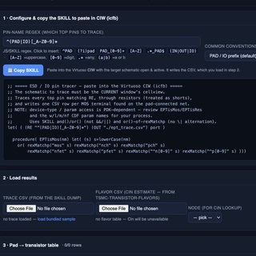
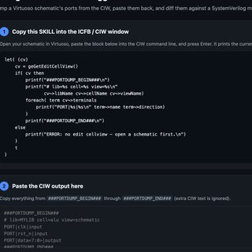
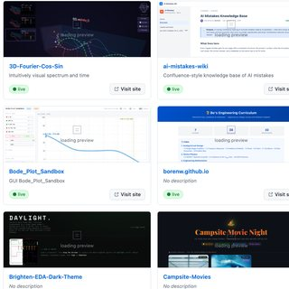
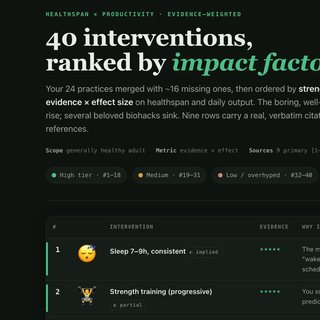
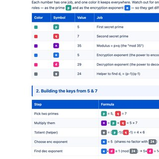
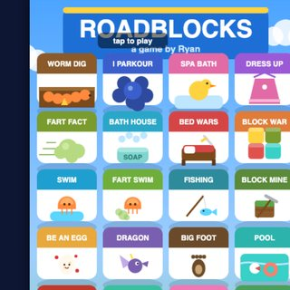
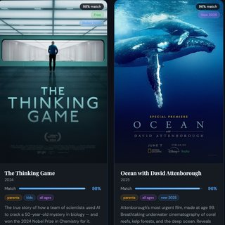
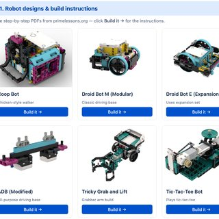
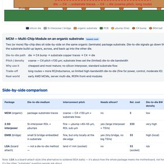
| Chapter | Project | Status |
|---|---|---|
| Ch. 1 | MOS Device Models — see Device Physics 2.3 (gm/ID) | PLANNED |
| Ch. 1 | GBW · Power · Area — Trade-off Triangle — a simple single-gm-stage OTA where GBW = gm/(2πCL) is derived from the bias current ID, inversion level gm/ID and load CL. Drag the operating dot along the Power–Area Pareto front, set Max-Power / Max-Area / Min-GBW spec limits (plots shade the violation regions red), and orbit a 3-D (GBW·Power·Area) view with translucent red spec planes. Live LaTeX equations substitute your current values; SKY130-class model | LIVE GITHUB PUBLIC |
| Ch. 2 | Voltage Buffer (SKY130) — unity-gain buffer design on open PDK
📐 Reference schematic — two-stage op amp with NMOS source-follower output (Allen & Holberg)Two-stage op amp with NMOS source-follower output buffer (M8, biased by sink M9) — redrawn after
P.E. Allen & D.R. Holberg, CMOS Analog Circuit Design, Lecture 26 "Buffered Op Amps", p. 26-5 (3rd ed., pp. 354–370).
The SKY130 buffer uses the same 5T OTA first stage (M1–M5; cf.
Yoon & Roh, Electronics 12(18):3833, 2023, Fig. 2) and the same M8/M9 follower output —
but drives the follower directly from the OTA output, omitting the M6/M7 common-source stage, and adds Rdeg below the follower source.
|
GITHUB PUBLIC |
| I/O | IBIS Model Builder — generate a board-level IBIS (.ibs) model in-browser from device W/L + process (SKY130), measured rise/fall times, raw I‑V data, or a pasted SPICE netlist (auto-detects the PAD I/O net) | LIVE GITHUB PUBLIC |
| Bias | Current Mirror — Sooch vs. 2-stack Cascode (SKY130) — NMOS bias current mirror on the open PDK: wide-swing Sooch vs standard cascode Wide-Swing Cascode Current Mirror — LVT-PMOS bias (SKY130) — annotated schematic + 1-click Cadence SKILL generator + report (private) 📐 Wide-swing (Sooch) vs 2-stack cascode — the headroom tradeBoth mirrors are two NMOS tall (a cascode), so both get the ~gmro2 output resistance. The 2-stack cascode self-biases its cascode gate to 2·Vgs, wasting ≈Vt on the bottom device and starving the output cascode (Vds = 0.15 V → Rout only 5.5 MΩ). The Sooch wide-swing mirror adds one ¼-size bias device that drops the cascode gate to Vt+2Vov, seating the bottom pair at Vdsat — recovering ~0.4 V of output swing and giving ~5× the Rout (26 MΩ) at mid-rail. Full ngspice write-up, annotated schematics and reproducible testbenches in the repo.
| GITHUB PUBLIC PRIVATE |
| Ch. 3 | Bode Plot Sandbox — GUI frequency-response explorer | LIVE |
| Ch. 4 | OTA Inverting Amp — Vo/Vi Explorer — interactive single-file explorer for an OTA inverting stage: plots |Vo/Vi| vs 1/Rsw, 1/Ri or gm, and shows the Miller-compensation feedback zero migrate LHP → ∞ → RHP (transmission null) as g·Rf crosses 1 | LIVE GITHUB PUBLIC |
| Ch. 4 | Feedback & Stability — Delayed Hysteretic Shunt-Clamp Protection Loop (SKY130) — an LDO overvoltage clamp as a relay-feedback loop: hysteresis + loop delay → a bounded limit cycle. Time-domain SKY130/ngspice study showing overshoot = slew·τloop and a max-safe-delay damage bound. Private repo. | GITHUB PRIVATE |
| Ch. 5 | Noise Analysis | PLANNED |
| Ch. 6 | Biquad Sandbox — play with biquad coefficients to create filters | LIVE |
| Ch. 7 | Crystal Oscillator — oscillator visualizer | LIVE |
| Ch. 7 | Ring Oscillator — Phase-Shift Model — why an even ring stalls at −356° while an odd ring crosses −180° and oscillates; a parallel helper 3rd inverter averages the phase past 180° to set fosc | LIVE |
| Ch. 8 |
ΔΣ Modulation — Simple Example (MATLAB) grumPy WorM — PWM/ΔΣ teaching toy as a flappy game · pygbag version |
LIVE |
| Ch. 9 | Analog Leetcode — problem sets & drills | GITHUB PUBLIC |
| Chapter | Project | Status |
|---|---|---|
| Ch. 1 | Semiconductor Fundamentals | PLANNED |
| Ch. 2 | PN Junctions & Diodes | PLANNED |
| Ch. 3 | gm/ID Device Characterization — MOSFET operation notebook | GITHUB PUBLIC |
| Ch. 3 | gm/Id First-Order Estimator — where a MOSFET leaves weak inversion: the gm=κ·Id line meets the √-law curve. Live gm-vs-Id plot (generalizes a 180nm bench sketch, extracts µnCox≈180µA/V²) + an editable constants-vs-process-node table & chart (µnCox, κ, corner current density) | LIVE GITHUB PUBLIC |
| Ch. 4 | Why lowering the bias current can't reclaim headroom — the Vdsat floor — from the Voltage Buffer (SKY130) write-up | GITHUB PUBLIC |
| Ch. 5 | Short-Channel Effects & Scaling | PLANNED |
| Ch. 6 | ESD — Protection & Debug Hub — 4 pages: debug master reference · damage first principles · current vs voltage · Rpo ballasting case study | LIVE |
| Chapter | Project | Status |
|---|---|---|
| Ch. 1 |
Fourier Basic Tones — Fourier series with audio tones 3D Fourier Cos/Sin — intuitive visual spectrum & time |
LIVE |
| Mental Math | Finger Multiplication — the 6×6…10×10 trick — animated SVG hands: fold the orange fingers and add them for the tens, multiply the raised blue fingers for the ones (7×7 → 4 orange + 3×3 blue = 49) | LIVE GITHUB PUBLIC |
| Ch. 2 | Discrete Fourier Transform (DFT / FFT) | PLANNED |
| Ch. 3 | DSP Fundamentals — sampling, z-transform, digital filters | PLANNED |
| Ch. 4 | Laplace & s-Domain Analysis | PLANNED |
| Chapter | Project | Status |
|---|---|---|
| Ch. 1 | Inductance Calculator (Visual) | LIVE |
| Ch. 2 | Transient Switch L-C — switching transients in RLC | LIVE |
| Ch. 3 | What is S11 when shorted to GND? | LIVE |
| Ch. 4 | Smith Chart & Matching Networks | PLANNED |
| Chapter | Project | Status |
|---|---|---|
| Ch. 1 | Flywheel Converter | GITHUB PUBLIC |
| Ch. 2 | Buck Converter — Interactive Explorer — CCM/DCM & voltage/peak-current-mode notebook (local Jupyter) · view on GitHub | GITHUB PUBLIC |
| Ch. 3 | Magnetics Design | PLANNED |
| Ch. 4 | Board-Level RLC Spec for IC Pins — Multiphase Buck — parasitic RLC budget & victim/aggressor coupling spec for a multiphase buck controller. Interactive spec explorer: aggressor/victim pin-group dropdowns (power, PWM, clock, data, V/I/temp/ref sense) and a ranked list of coupling mechanisms (mutual-L, ground-return, capacitive, PDN, reflection…) that derives the board mutual-inductance / Cac / ground-return limits from each victim's error budget (M ≤ 8.3 pH per aggressor). Bench-sketch coupling schematic + worked Vemf=M·dI/dt. Private repo. | GITHUB PRIVATE |
| Chapter | Project | Status |
|---|---|---|
| Ch. 1 | Feedback & Block Diagrams | PLANNED |
| Ch. 2 | Stability & Root Locus | PLANNED |
| Ch. 3 | Relay Feedback & Limit Cycles — Delayed Hysteretic Clamp Loop (SKY130) — a hysteretic (relay) shunt-clamp with transport delay: the classic relay-plus-delay limit-cycle oscillator, worked in the time domain on real SKY130 devices. Derives the overshoot law Vpeak=Von+slew·τ and a maximum-loop-delay stability bound, all verified in ngspice. Private repo. | GITHUB PRIVATE |
| Ch. 4 | PID & Loop Shaping | PLANNED |
| Chapter | Project | Status |
|---|---|---|
| Ch. 1 | Advanced Packaging Explorer — how a package re-connects two chiplets: pick an example (MCM on organic substrate · 2.5D silicon interposer / CoWoS · EMIB embedded bridge · LGA socket) and see a labeled cross-section + the die-to-die path, interconnect pitch, cost and a real-world part; side-by-side comparison table | LIVE GITHUB PUBLIC |
| Ch. 2 | 3D stacking — TSV & hybrid bonding (Foveros) | PLANNED |
| Tool | Description | Status |
|---|---|---|
| Schematic | Schematic drawing tool | LIVE |
| Brighten EDA Dark Theme | Make EDA screenshots readable | LIVE |
| Calibre DRC / LVS GUI | Browser GUI to launch Calibre DRC/LVS in your shell env — prefill from logs, auto module-load, newest-deck discovery, live ETA, result compare | GITHUB PUBLIC |
| Run .csh + ihdl lock-check GUI | Run a .csh in your shell env with a Cliosoft-SOS lock-check guard for Cadence ihdl (verify schematic/symbol aren't checked out first) — live log + ETA | GITHUB PUBLIC |
| ADE XL Pass/Fail Dashboard | Browser dashboard for Cadence ADE XL / Assembler pass-fail tests — scans libraries for specs, reads pass/fail straight from the results SQLite DB (color-coded, last-checked timestamps), pick tests and launch runs from your shell env with live % / ETA and a timestamped run log | GITHUB PRIVATE |
| Cadence Config-View Manager | View, edit, bulk-rebind and compare Hierarchy-Editor config views (expand.cfg) — scans libraries for config views, assign cell/instance views by drop-down (real on-disk views resolved via cds.lib), filter + sort + multi-select bulk rebind, save back (with .bak), and diff config_set1 vs config_set2 | GITHUB PRIVATE |
| ESD / IO Pin Tracer (repo) | Offline HTML tool: generate copy-ready SKILL for the CIW that traces schematic pad nets through the hierarchy (resistors as shorts) down to transistors and dumps a CSV; the page renders a grouped, per-column filter/sort table (pin rowspan merge) with per-pin summaries — output driver ΣW and estimated input Cin | LIVE GITHUB PUBLIC |
| TSMC Transistor Flavors | Editable CSV of TSMC node × flavor → approximate (public) gate-cap Cox, used by the ESD/IO Pin Tracer to estimate input capacitance. Values are placeholders to replace with your PDK's numbers | GITHUB PRIVATE |
| Verilog Pin Mismatch Debugger (repo) | Offline HTML tool: generate copy-ready SKILL for the CIW that dumps a schematic view's terminals, paste it back, and diff against a SystemVerilog module — highlights pin name / direction / width mismatches (bus <7:0> ↔ [7:0], inputOutput ↔ inout) | LIVE GITHUB PUBLIC |
| MCM / Package Browser (repo) | Single-file viewer for a flip-chip BGA-on-substrate package: 2-D layer-by-layer top view (per-layer visibility / solo / net-highlight / hover-for-net, pan & zoom) and a 3-D exploded stack (soldermask → metals / planes → core → metals, with die + C4 bumps + BGA balls + via pillars; orbit / zoom / explode / auto-spin). Ships a sample FCBGA; Load JSON accepts a neutral package-JSON exported from a Cadence .mcm (extracta / IPC-2581 / ODB++) | LIVE GITHUB PUBLIC |
| Voice to SVG | Voice → vector graphics | GITHUB PUBLIC |
| Repo Summary | Auto-updating list of all published repos | LIVE |
| ls-home-notebook | Home notebook (Jupyter) | GITHUB PUBLIC |
| Topic | Description | Status |
|---|---|---|
| 40 Biohacks, Ranked | Healthspan & productivity interventions ranked by evidence × impact — with a top-10 traps list and cited primary sources | LIVE |
| Topic | Description | Status |
|---|---|---|
| RSA by Hand | Colored, step-by-step worked example — encoding "EVE" → "JVJ" with primes 5 & 7 (n=35, e=5, d=29), then decoding it back | LIVE |
| Game | Description | Status |
|---|---|---|
| Catch Bigfoot | Browser game | LIVE |
| Roadblocks | Browser game | LIVE |
| grumPy WorM | Flappy-worm PWM game (also in Analog Ch. 8) | LIVE |
| Lake Fulmore | Trip page | LIVE |
| Campsite Movies | Movie picker for camping | LIVE |
| Piano Theory | Music theory toy | LIVE |
| LEGO SPIKE Prime — Project Ideas | Pick-your-build gallery of 25 SPIKE Prime robot designs & advanced builds, each linking to instructions | LIVE |
Page numbers are permanent and append-only — a new page always takes the next number (29, 30, …), existing pages are never renumbered. Each page also shows its number in its own footer.